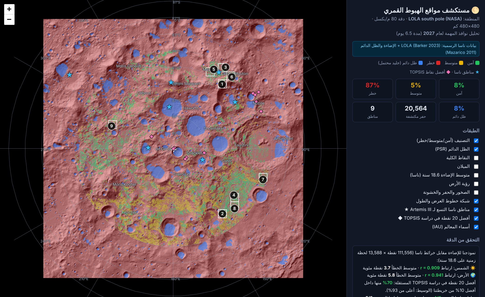
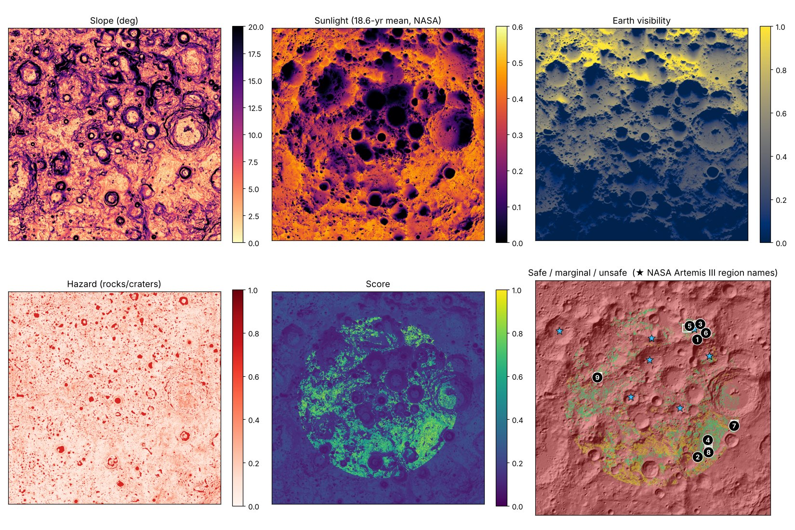
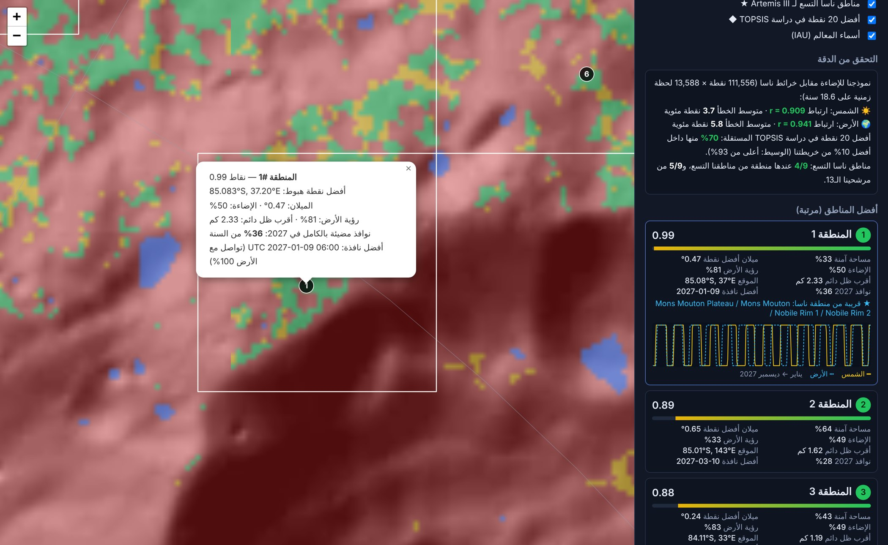
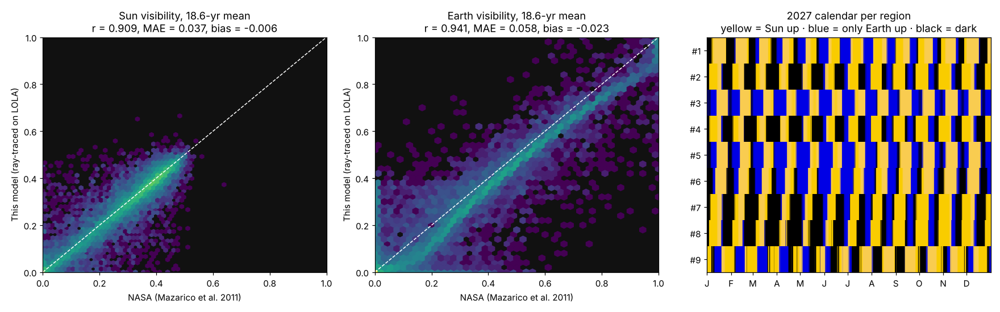
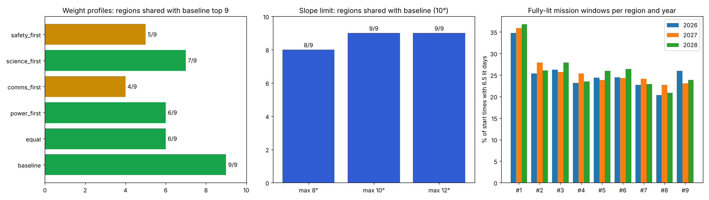

مستكشف مواقع الهبوط القمري
التقرير الكامل من الألف إلى الياء

★الملخص التنفيذي
الفكرة والنتيجة في صفحة وحدة
المشكلة: القطب الجنوبي للقمر هو الهدف الأول لمهمة Artemis III، لأن فيه حفرًا ظلها دائم يُحتمل فيها جليد ماء. لكن الشمس هناك ما ترتفع أكثر من 1.5° فوق الأفق، فالظلال طويلة والأرض وعرة، واختيار مكان الهبوط يحتاج تحليل بيانات ضخمة.
الحل: نظام بلغة بايثون ينزّل 6 منتجات رسمية من ناسا (1.2 جيجا)، ويركبها على شبكة وحدة 480×480 كم بدقة 80 م (36 مليون بكسل). بعدها يقيّم كل نقطة بخمسة معايير: الميلان، والإضاءة، ورؤية الأرض، والقرب من الجليد، والصخور. ويختار 13 منطقة مرشحة ثم أفضل 9، ويحسب لكل وحدة نوافذ الإطلاق الحقيقية في 2027 ساعة بساعة.
أفضل منطقة: 85.08°S 37.2°E قرب جبل Mons Mouton. فيها ضوء متواصل لمدة 6.5 يوم في 36% من أوقات البدء الممكنة في 2027، والأرض ظاهرة 81% من الوقت، وأقرب ظل دائم (جليد محتمل) على بعد 2.33 كم. وأفضل نافذة إطلاق تبدأ 2027-01-09. وتبقى الأفضل في 2026 و2027 و2028.
القيمة: اللي ياخذ أسابيع من التحليل اليدوي في نظم المعلومات الجغرافية، يطلع هنا بأمر واحد خلال 3 دقايق تقريبًا، وقابل للتكرار لأي سنة أو أي قيود. والنواة مفتوحة المصدر، ونموذج العمل Open-Core مشروح في الفصل 10.
المحتويات
- المشكلة ولماذا القطب الجنوبي
- كيف تختار ناسا مواقع الهبوط
- معمارية النظام
- البيانات الرسمية
- المنهجية خطوة بخطوة
- النتائج
- التحقق من الدقة
- اختبارات المتانة
- التشغيل من الألف إلى الياء
- نموذج العمل وملف الهاكثون
- الحدود وخطة التطوير
- المراجع والملاحق
1المشكلة ولماذا القطب الجنوبي
أهم مكان على القمر، وأصعب مكان للهبوط
لماذا مهم؟
- حفر ظلها دائم، حرارتها تقريبًا −230°C، ويُحتمل فيها جليد ماء.
- الماء معناه شرب، وأكسجين، ووقود هيدروجين للصواريخ.
- قمم قريبة منها مضيئة أغلب الوقت، يعني طاقة شمسية شبه متواصلة.
لماذا صعب؟
- الشمس ما ترتفع أكثر من ~1.5° فوق الأفق، فأي تل يحجبها.
- الأرض أحيانًا تحت الأفق، والاتصال المباشر ينقطع.
- منحدرات وحفر وصخور، والمركبة تحتاج ميلانًا أقل من 8° إلى 10°.
شروط المكان الآمن
| الشرط | القيمة في النظام | السبب |
|---|---|---|
| الميلان | أحمر فوق 10°، أصفر بين 8° و10° | ثبات المركبة وعدم انقلابها |
| الإضاءة | 6.5 يوم ضوء متواصل (مدة المهمة) | الطاقة والحرارة |
| الاتصال بالأرض | نسبة الوقت اللي الأرض فيه فوق الأفق | الاتصال المباشر DTE |
| القرب من الظل الدائم | مثالي ≤ 2 كم، بدون قيمة بعد 15 كم | الوصول للجليد مشيًا |
| الصخور والحفر | الخشونة على مسافة 100 م + الحفر المكتشفة | سلامة الهبوط |
| منطقة الاستكشاف | داخل 6° من القطب (~84° جنوب) | شرط Artemis III |
| قطع الهبوط | دائرة 200 م حول كل نقطة كلها آمنة | دقة الهبوط محدودة |
2كيف تختار ناسا مواقع الهبوط
مركبة LRO ومن 13 منطقة إلى 9
تدور مركبة LRO (Lunar Reconnaissance Orbiter) حول القمر من 2009، وتجمع البيانات بثلاث أدوات:
| الأداة | تقيس | في مشروعنا |
|---|---|---|
| LOLA | ارتفاعات بالليزر، ومنها الميلان والخشونة والإضاءة | خرائط Barker 2023 + خرائط الإضاءة Mazarico 2011 |
| Diviner | الحرارة، ومنها وفرة الصخور | الخشونة من LOLA، مع خيار --rocks |
| LROC NAC | صور بدقة ~0.5 م للحفر والصخور | وحدة YOLO جاهزة (hazards.py) |
في 2022 أعلنت ناسا 13 منطقة مرشحة لـ Artemis III، كل وحدة تقريبًا 15×15 كم. وفي أكتوبر 2024 قلّصتها إلى 9 مناطق: Peak near Cabeus B، وHaworth، وMalapert Massif، وMons Mouton Plateau، وMons Mouton، وNobile Rim 1، وNobile Rim 2، وde Gerlache Rim 2، وSlater Plain. وحسب ملخص ناسا (NTRS 20250011660) اعتمد التقليص على:
- توفر المهمة طوال السنة (mission availability): كل قيود الإطلاق والمدار والإضاءة مجتمعة.
- سلامة التضاريس: مساحة منخفضة الميلان "كافية"، وتجنّب الحفر والصخور.
- الاتصال المباشر مع الأرض، والإضاءة المتواصلة طول مدة البقاء (5.75 إلى 6.25 يوم).
- الاحتفاظ بأكثر من منطقة، لأن "كل منطقة لوحدها تعطي فرصًا محدودة".
3معمارية النظام
من الملفات الخام إلى قرار الهبوط
الوحدات البرمجية
| الملف | الوظيفة |
|---|---|
nasa.py | كتالوج المنتجات، والتنزيل القابل للاستئناف، وإعادة التشكيل على شبكة وحدة |
ephemeris.py | مواقع الشمس والأرض (astropy/ERFA) + اتجاه القمر (IAU 2009) |
sunmodel.py | تتبع أشعة الأفق وحساب الرؤية الزمنية (numba، متوازي) |
terrain.py · hazards.py | الميلان، والخشونة، وكشف الحفر، وYOLO الاختياري، وخريطة الخطر |
scoring.py · regions.py | النقاط الموزونة، والتصنيف، واختيار المناطق، وتحويل الإحداثيات |
nasa_pipeline.py | يربط كل شي: المرشحين، والنوافذ، والاختيار النهائي، والتحقق |
reference.py | مناطق ناسا التسع، وأفضل 20 نقطة في TOPSIS، ومعالم IAU |
experiments.py | اختبارات المتانة: الأوزان، وحد الميلان، والسنوات |
viz.py · report.py · cli.py | الخريطة التفاعلية، والصور، والتقرير، وسطر الأوامر |
4البيانات الرسمية
6 منتجات من مختبر NASA Goddard، مجانية ومفتوحة
| الطبقة | الملف | الدقة | المرجع |
|---|---|---|---|
| الارتفاع | LDEM_80S_80MPP_ADJ.TIF | 80 م | Barker et al. 2023 · PGDA 90 |
| الميلان | LDSM_80S_80MPP_ADJ.TIF | 80 م | Barker et al. 2023 |
| الخشونة (100 م) | LDRM_80S_50MPP_ADJ_ROUGH_100M.TIF | 50 م | Barker et al. 2023 |
| متوسط الإضاءة | AVGVISIB_75S_120M_201608.TIF | 120 م | Mazarico et al. 2011 · PGDA 69 |
| متوسط رؤية الأرض | AVGVISIB_75S_120M_201608_EARTH.TIF | 120 م | Mazarico et al. 2011 |
| الظل الدائم | LPSR_75S_120M_201608.TIF | 120 م | Mazarico et al. 2011 |
- كل الملفات بإسقاط قطبي ستيريوغرافي (كرة نصف قطرها 1737.4 كم، وخط الطول 0 لفوق)، فالتركيب يتم بدقة رياضية بدون تشويه.
- تحققنا من دقة الإحداثيات: مركز حفرة Shackleton (من دليل IAU) يطلع على عمق −2788 م داخل ظل دائم، والتحويل العكسي يرجع نفس الإحداثيات.
- متوسطات الإضاءة محسوبة ساعة بساعة على دورة كاملة طولها 18.6 سنة، وتشمل الشتاء القطبي. عشان كذا حتى أفضل المواقع متوسطها حوالي 0.35 إلى 0.5، وعايرنا الحدود على هذا التوزيع: الوسيط 0.29، وأعلى 1% قيمته 0.49.

5المنهجية خطوة بخطوة
كيف يتحول كل بكسل إلى قرار
5.1 الميلان والخشونة والحفر
الميلان من منتج ناسا الرسمي. الخشونة على مسافة 100 م تتحول لمؤشر خطر من 0 إلى 1 (ما فوق 3 م يعتبر صخري ووعر). والحفر نكشفها من خريطة الارتفاع بطرح نسخة منعّمة على 3 مقاييس: تطلع 20,564 حفرة أكبر من 400 م.
5.2 محرك الإضاءة الفيزيائي
- الأفق: لكل نقطة نتتبع الأشعة على خريطة LOLA في 64 إلى 128 اتجاه لين 150 كم، بعينات خطية ثنائية، مع حساب انحناء القمر
d²/2R. - مواقع الشمس والأرض: من تقويم ERFA المدمج في astropy، ويتحول لإطار القمر بنموذج IAU 2009 (Archinal 2011). القيم المتحقق منها: ارتفاع الشمس ±1.55°، وتمايل الأرض ±6.8° و±7.7°، والمسافة من 357 إلى 407 ألف كم.
- الرؤية: لكل لحظة نحسب ارتفاع الجسم واتجاهه في إطار الشبكة (مع فرق زاوية الرؤية للأرض)، ونقارنه بالأفق، ونحسب الجزء الظاهر من القرص (الشمس 0.53°، والأرض 1.9°).
- السرعة: مكتوب بـ numba ويشتغل على كل الأنوية: 111 ألف نقطة × 13.6 ألف لحظة في حوالي 35 ثانية.
5.3 النقاط والتصنيف
| المعيار | التحويل إلى 0–1 | الوزن |
|---|---|---|
| الميلان | 1 − الميلان ÷ 10° | 30% |
| الإضاءة | متوسط ناسا ÷ 0.5 (بحد أقصى 1) | 25% |
| رؤية الأرض | متوسط ناسا ÷ 0.6 (بحد أقصى 1) | 15% |
| القرب من الظل الدائم | 1 حتى 2 كم، ثم ينزل لين 0 عند 15 كم | 15% |
| الصخور والحفر | 1 − مؤشر الخطر | 15% |
أحمر: ميلان فوق 10°، أو ظل دائم، أو إضاءة أقل من 0.15، أو خطر فوق 0.6، أو خارج منطقة الاستكشاف، وكلها موسّعة 200 م لقطع الهبوط. أصفر: ميلان فوق 8°، أو رؤية أرض أقل من 0.15، أو نقاط أقل من 0.55. أخضر: الباقي.
5.4 اختيار المناطق
نافذة 15×15 كم تتحرك بخطوة 7.5 كم. نقاط المنطقة = 30% للمساحة الآمنة (تكتمل عند 15% من مساحتها) + 70% لمتوسط أفضل 5% من النقاط فيها. بعدها نختار 13 منطقة ما تتداخل، وبين أفضل نقاطها 20 كم على الأقل.
5.5 نوافذ الإطلاق والاختيار النهائي
لأفضل نقطة في كل منطقة مرشحة نحسب الإضاءة ورؤية الأرض كل ساعة على مدار السنة (لراصد على ارتفاع 2 م). النافذة الصالحة = 6.5 يوم متواصلة فيها أكثر من نصف قرص الشمس ظاهر في كل ساعة. والتوفر = نسبة أوقات البدء (كل 6 ساعات) اللي تعطي نافذة صالحة. النقاط النهائية = 60% نقاط التضاريس + 40% التوفر، وبعدها أفضل 9.
6النتائج
أفضل 9 مناطق على بيانات ناسا الحقيقية، ونوافذ 2027
| # | الموقع | النقاط | نوافذ 2027 | أفضل نافذة 2027 (شهر-يوم) | الميلان | الإضاءة | الأرض | الجليد | آمن | منطقة ناسا |
|---|---|---|---|---|---|---|---|---|---|---|
| 1 | 85.08°S 37.2°E | 0.992 | 36% | 01-09 | 0.47° | 50% | 81% | 2.33 كم | 33% | Mons Mouton / Nobile |
| 2 | 85.01°S 143.0°E | 0.894 | 28% | 03-10 | 0.65° | 49% | 33% | 1.62 كم | 64% | — |
| 3 | 84.11°S 32.7°E | 0.882 | 26% | 01-13 | 0.24° | 49% | 83% | 1.19 كم | 43% | Mons Mouton |
| 4 | 85.34°S 127.6°E | 0.876 | 25% | 03-09 | 0.18° | 48% | 33% | 1.66 كم | 77% | — |
| 5 | 84.58°S 27.0°E | 0.866 | 24% | 01-13 | 0.58° | 48% | 87% | 2.17 كم | 51% | Mons Mouton |
| 6 | 84.38°S 39.2°E | 0.857 | 24% | 01-12 | 0.29° | 52% | 80% | 0.62 كم | 39% | Mons Mouton / Nobile |
| 7 | 84.23°S 109.1°E | 0.852 | 24% | 02-10 | 0.29° | 46% | 34% | 2.15 كم | 59% | — |
| 8 | 84.76°S 134.5°E | 0.843 | 23% | 03-09 | 0.32° | 46% | 33% | 0.56 كم | 67% | — |
| 9 | 86.01°S 290.1°E | 0.838 | 23% | 06-22 | 0.57° | 51% | 56% | 0.64 كم | 30% | — |
الإضاءة ورؤية الأرض متوسطات ناسا لمدة 18.6 سنة عند أفضل نقطة. "آمن" = نسبة المساحة الخضراء في المنطقة. "الجليد" = المسافة لأقرب ظل دائم.

7التحقق من الدقة
ثلاث مراجع مستقلة
7.1 نموذجنا مقابل خرائط ناسا الرسمية
حسبنا متوسط 18.6 سنة بأنفسنا لـ 111,556 نقطة × 13,588 لحظة زمنية، وقارنّاه نقطة بنقطة بخرائط Mazarico et al. (2011):
| الارتباط r | متوسط الخطأ | الانحياز | خطأ أقل من 5 نقاط | خطأ أقل من 10 نقاط | |
|---|---|---|---|---|---|
| ☀️ الشمس | 0.909 | 3.7 نقطة | -0.6 نقطة | 78% | 91% |
| 🌍 الأرض | 0.941 | 5.8 نقطة | -2.3 نقطة | 63% | 84% |

7.2 مقابل دراسة TOPSIS المستقلة (arXiv:2406.19863)
هذي الدراسة رتبت 1247 نقطة في مناطق ناسا بطريقة TOPSIS وببيانات مختلفة (خرائط 5 م، ورؤية الأفق، والمعادن). 70% من أفضل 20 نقطة عندهم تقع ضمن أفضل 10% من خريطتنا، والوسيط أعلى من 93%. وأفضل نقطة عندهم (#358، Nobile Rim 2) نقاطها عندنا 0.763، أعلى من 94% من المنطقة.
| النقطة | المنطقة | R عندهم | نقاطنا | ترتيبها عندنا | الميلان |
|---|---|---|---|---|---|
| 358 | Nobile Rim 2 | 0.6916 | 0.763 | 94% | 2.64° |
| 356 | Nobile Rim 2 | 0.6869 | 0.752 | 93% | 2.68° |
| 357 | Nobile Rim 2 | 0.6711 | 0.752 | 93% | 2.68° |
| 354 | Nobile Rim 2 | 0.6684 | 0.752 | 93% | 2.68° |
| 350 | Nobile Rim 2 | 0.661 | 0.745 | 92% | 2.61° |
| 355 | Nobile Rim 2 | 0.6487 | 0.752 | 93% | 2.68° |
| 352 | Nobile Rim 2 | 0.6455 | 0.785 | 96% | 1.54° |
| 351 | Nobile Rim 2 | 0.6408 | 0.745 | 92% | 2.61° |
| 353 | Nobile Rim 2 | 0.622 | 0.8 | 97% | 1.33° |
| 1121 | Amundsen Rim | 0.5653 | 0.866 | 100% | 0.42° |
| 1122 | Amundsen Rim | 0.5649 | 0.824 | 98% | 1.8° |
| 995 | Nobile Rim 2 | 0.5353 | 0.11 | 12% | 17.32° |
| 661 | Site 004 (near the pole) | 0.5294 | 0.099 | 7% | 30.28° |
| 998 | Nobile Rim 2 | 0.4916 | 0.866 | 100% | 1.57° |
| 1223 | Peak Near Shackleton | 0.4689 | 0.884 | 100% | 0.94° |
| 744 | Faustini Rim A | 0.4567 | 0.728 | 90% | 1.58° |
| 1043 | Nobile Rim 2 | 0.4373 | 0.263 | 68% | 1.16° |
| 657 | Site 004 (near the pole) | 0.4179 | 0.096 | 6% | 28.93° |
| 726 | de Gerlache Rim 2 | 0.3907 | 0.152 | 42% | 20.07° |
| 1005 | Peak Near Shackleton | 0.3714 | 0.221 | 67% | 0.67° |
7.3 مقابل مناطق ناسا التسع
مناطقنا التسع تغطي 4/9 من مناطق ناسا، ومرشحونا الـ13 يغطون 5/9. وبما إن ناسا ما تنشر حدود مناطقها، نحدد كل منطقة بمركز المَعْلم اللي سُمّيت عليه (دليل IAU)، ونصف قطر المطابقة = نصف قطر المعلم + 10 كم (بين 20 و50 كم).
| منطقة ناسا | المعلم | نصف القطر | أقرب منطقة لنا | مناطقنا داخلها | أفضل نقاط قريبة |
|---|---|---|---|---|---|
| Peak near Cabeus B | Cabeus B (crater) | 40 كم | 122.7 كم | — | 68% |
| Haworth | Haworth (crater) | 36 كم | 105.8 كم | — | 100% |
| Malapert Massif | Mons Malapert | 44 كم | 82.0 كم | — | 100% |
| Mons Mouton Plateau | Mons Mouton | 50 كم | 11.5 كم | #1, #3, #5, #6 | 100% |
| Mons Mouton | Mons Mouton | 50 كم | 11.5 كم | #1, #3, #5, #6 | 100% |
| Nobile Rim 1 | Nobile (crater) | 50 كم | 41.3 كم | #1, #6 | 100% |
| Nobile Rim 2 | Nobile (crater) | 50 كم | 41.3 كم | #1, #6 | 100% |
| de Gerlache Rim 2 | de Gerlache (crater) | 26 كم | 78.6 كم | — | 100% |
| Slater Plain | Slater (crater) | 23 كم | 87.0 كم | — | 100% |
8اختبارات المتانة
هل تتغير النتائج لو غيرنا الافتراضات؟ (زمن التشغيل 130.6 ثانية)

8.1 أوزان مختلفة لصاحب القرار
| الملف | الميلان | الإضاءة | الأرض | الجليد | الصخور | مشتركة مع الأساسي |
|---|---|---|---|---|---|---|
| الأساسي | 30% | 25% | 15% | 15% | 15% | 9/9 |
| أوزان متساوية | 20% | 20% | 20% | 20% | 20% | 6/9 |
| الطاقة أولًا | 25% | 45% | 10% | 10% | 10% | 6/9 |
| الاتصال أولًا | 25% | 20% | 35% | 10% | 10% | 4/9 |
| العلم (الجليد) أولًا | 25% | 15% | 10% | 40% | 10% | 7/9 |
| السلامة أولًا | 45% | 15% | 10% | 5% | 25% | 5/9 |
8.2 حد الميلان الأقصى
| 8° | 10° (الأساسي) | 12° |
|---|---|---|
| 8/9 (آمن 6.8%) | 9/9 (آمن 8.2%) | 9/9 (آمن 8.6%) |
8.3 نوافذ الإطلاق في ثلاث سنوات
| المنطقة | 2026 | 2027 | 2028 |
|---|---|---|---|
| #1 | 35% 2026-01-21 | 36% 2027-01-09 | 37% 2028-01-01 |
| #2 | 25% 2026-02-21 | 28% 2027-03-10 | 26% 2028-01-30 |
| #3 | 26% 2026-01-01 | 26% 2027-01-13 | 28% 2028-01-02 |
| #4 | 23% 2026-02-21 | 25% 2027-03-09 | 23% 2028-01-29 |
| #5 | 24% 2026-01-01 | 24% 2027-01-13 | 26% 2028-01-02 |
| #6 | 24% 2026-01-01 | 24% 2027-01-12 | 26% 2028-01-01 |
| #7 | 23% 2026-02-21 | 24% 2027-02-10 | 23% 2028-01-02 |
| #8 | 20% 2026-03-20 | 23% 2027-03-09 | 21% 2028-02-26 |
| #9 | 26% 2026-01-01 | 23% 2027-06-22 | 24% 2028-05-15 |
9التشغيل من الألف إلى الياء
على جهازك، وعلى سيرفرات GitHub
9.1 على جهازك
- ثبّت Python 3.10 أو أحدث، وGit.
- نزّل المشروع:
git clone https://github.com/ELD11q/-ahs.git cd -ahs/lunar-landing-navigator python -m venv .venv && source .venv/bin/activate # ويندوز: .venv\Scripts\activate pip install -r requirements.txt - تأكد إن كل شي شغال:
python -m pytest -q، والمفروض يطلع 15 passed. - شغّل التحليل الكامل على بيانات ناسا:
python -m lunar_nav --nasa -o output # أول مرة ينزّل ~1.2 GB python -m lunar_nav.experiments -o output # اختبارات المتانة (اختياري) - افتح
output/landing_sites_map.htmlفي المتصفح، واقرأoutput/REPORT.md.
9.2 خيارات مفيدة
| الخيار | الوظيفة |
|---|---|
--year 2028 | سنة نوافذ الإطلاق |
--max-slope 8 | حد الميلان |
--weights '{"illumination":0.4}' | تغيير أوزان المعايير |
--half-width-km 240 --res 80 | حجم المنطقة ودقتها |
--demo | وضع تجريبي سريع ببيانات مولّدة |
--dem file.tif --pixel-size 20 | ملف ارتفاعات من اختيارك |
9.3 على سيرفرات GitHub
الملف .github/workflows/lunar-navigator.yml يشغّل الاختبارات، وبعدها التحليل الكامل على بيانات ناسا مع كل تحديث (والبيانات محفوظة في الكاش). وللتشغيل اليدوي: Actions ← Lunar Landing Navigator ← Run workflow، واختر الوضع (nasa / demo / custom) والسنة. النتائج تطلع في صفحة التشغيل، وتنزل كملف اسمه landing-sites-nasa.
9.4 المخرجات
| الملف | المحتوى |
|---|---|
landing_sites_map.html · landing_sites_map_en.html | خريطة تفاعلية تشتغل بدون إنترنت (~5 MB)، عربي وإنجليزي |
REPORT.md · REPORT_EN.md | تقرير بكل الأرقام، عربي وإنجليزي |
summary.png · validation.png | لوحات الطبقات والتحقق |
ranked_regions.csv/json · validation.json | البيانات الكاملة للبرامج وExcel |
10نموذج العمل وملف الهاكثون
Open-Core: النواة مفتوحة، والخدمات المتقدمة مدفوعة
الباقات المقترحة
| الباقة | السعر | تشمل | العميل |
|---|---|---|---|
| مفتوح | مجاني | الكود كامل، وبيانات ناسا، والخريطة، والتقرير | الطلاب والباحثون |
| احترافي سحابي | [$__ شهريًا] | دقة 5 إلى 20 م، وقيود مخصصة، ونوافذ أي سنة، وAPI | الشركات والفرق |
| مؤسسات | [$__ لكل دراسة] | دراسة موقع كاملة لمهمة محددة، وتقرير، ودعم | الوكالات |
الأسعار بين أقواس مقترحة، وتتحدد بعد التحقق من السوق.
التميّز التنافسي
- أدوات ناسا الداخلية ما هي متاحة للعامة، والدراسات الأكاديمية (مثل TOPSIS) تطلع مرة وحدة ويدويًا عبر برامج GIS.
- نظامنا مفتوح، وقابل للتكرار، ومتحقق منه، ويعيد التحليل لأي سنة أو قيود خلال دقايق.
- يحسب نوافذ الإطلاق الحقيقية، وهذا الشي اللي ناسا تقول إنه حاسم، ومتوسطاتها المنشورة ما تغطيه.
- عربي وإنجليزي، ومناسب للبرامج الفضائية الناشئة في المنطقة.
عرض الهاكثون في 3 دقايق
- 30 ثانية، المشكلة: القطب الجنوبي فيه ماء، لكن الهبوط فيه صعب.
- 30 ثانية، الحل: أمر واحد يحول بيانات ناسا إلى قرار.
- 60 ثانية، العرض المباشر: افتح الخريطة، واضغط على المنطقة 1، وشغّل طبقة الإضاءة.
- 30 ثانية، الدقة: 0.91 و0.94، و70%، و4 من 9.
- 30 ثانية، نموذج العمل وخارطة الطريق.
خارطة الطريق
| المرحلة | المدة | المخرجات |
|---|---|---|
| النموذج الأول ✓ | الآن | بيانات ناسا، ونوافذ 2027، والتحقق، وGitHub Actions |
| دقة أعلى | 3 أشهر | خرائط LOLA بدقة 5 م للمناطق النهائية، وصور LROC + YOLO للصخور، ونوافذ لكل بكسل |
| منصة سحابية | 6 أشهر | تطبيق ويب، وواجهة API، وتخطيط مسار العربة للظل الدائم |
| التوسع | 12 شهر | القطب الشمالي، والمريخ، وشراكات مع الوكالات |
11الحدود وخطة التطوير
وش يقدر النظام عليه، ووش ما يقدر
- أداة بحثية وتعليمية، مو أداة طيران معتمدة.
- الصخور الأصغر من حوالي 100 م ما تبين في بيانات LOLA، وتحتاج صور LROC NAC مع نموذج YOLO مدرّب (الكود جاهز، والنموذج المدرّب مو جاهز).
- نوافذ الإطلاق محسوبة لأفضل نقطة في كل منطقة مرشحة، مو لكل بكسل.
- نموذج الإضاءة قريب جدًا من ناسا لكنه مو مطابق 100%: الفرق 3.7 نقطة للشمس و5.8 للأرض، بسبب دقة الأفق وتمثيل القرص.
- ما يشمل مدار NRHO، ولا مسارات الإطلاق، ولا قيود مركبة HLS، ولا الحرارة.
- مناطق ناسا تحددت بمراكز المعالم، لأن حدودها الرسمية مو منشورة.
جودة الكود
- 15 اختبار آلي تشمل: الميلان على سطح معروف، والأفق المرجعي، والتمايل الفلكي، والتحويل الستيريوغرافي، والنظام كامل، والخريطة.
- تكامل مستمر على GitHub Actions مع كل تحديث.
- كل أرقام هذا التقرير تتولد آليًا من ملفات النتائج (
docs/report/build_report.py).
12المراجع والملاحق
المصادر العلمية والبيانات
المصادر اللي جات مع فكرة المشروع
- NASA Scientific Visualization Studio: الإضاءة في القطب الجنوبي. svs.gsfc.nasa.gov/vis/a000000/a003500/a003587/
- NASA (2025). Artemis III Site Selection Update: Downselection From Thirteen to Nine Candidate Regions. NTRS 20250011660.
- Aerospace America (AIAA). The Choice. aerospaceamerica.aiaa.org/features/the-choice/
- Peña-Asensio, E., Neira-Acosta, Á.-S., Sánchez-Lozano, J.M. (2024). Evaluating potential landing sites for the Artemis III mission using a multi-criteria decision making approach. arXiv:2406.19863.
البيانات والطرق
- Barker, M.K. et al. (2023). A New View of the Lunar South Pole from LOLA. NASA PGDA product 90.
- Mazarico, E., Neumann, G.A., Smith, D.E., Zuber, M.T., Torrence, M.H. (2011). Illumination conditions of the lunar polar regions using LOLA topography. Icarus 211, 1066–1081. PGDA product 69.
- Smith, D.E. et al. (2010). The Lunar Orbiter Laser Altimeter Investigation on the LRO Mission. Space Sci. Rev. 150.
- Archinal, B.A. et al. (2011). Report of the IAU WGCCRE: 2009. Celest. Mech. Dyn. Astr. 109, 101–135.
- Robinson, M.S. et al. (2010). LROC Instrument Overview. Space Sci. Rev. 150.
- Bandfield, J.L. et al. (2011). Lunar surface rock abundance … Diviner. JGR Planets 116.
- Robbins, S.J. (2019). A New Global Database of Lunar Impact Craters >1–2 km. JGR Planets 124.
- IAU / USGS. Gazetteer of Planetary Nomenclature.
- Astropy Collaboration (2022). The Astropy Project. ApJ 935, 167. · Lam, S.K. et al. (2015). Numba. LLVM-HPC.
ملحق أ: المصطلحات
| المصطلح | المعنى |
|---|---|
| PSR | منطقة ظلها دائم (Permanently Shadowed Region) |
| LOLA / LRO | مقياس الارتفاع الليزري / المركبة المدارية |
| DEM | خريطة ارتفاعات رقمية |
| Libration | تمايل القمر الظاهري، اللي يحرك الأرض في سماء القطب |
| TOPSIS | طريقة لاتخاذ القرار متعدد المعايير |
| AEZ | منطقة استكشاف Artemis (حتى 6° من القطب) |
| NRHO | المدار الهالي القريب من الخط المستقيم، اللي تستخدمه Artemis |
lunar-landing-navigator/ · النتائج results/nasa_2027/ · الدليل docs/guide/ · هذا التقرير docs/report/